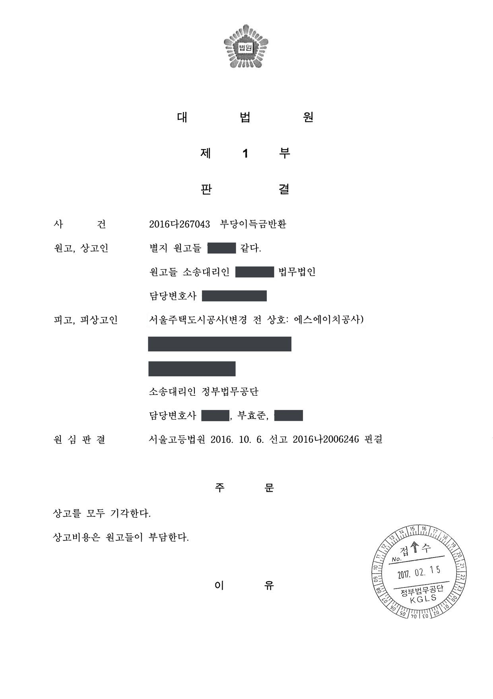

도시개발사업 역사 설치비용 부당이득반환 청구소송 (상고심)
대법원 2016다267043 · 담당변호사 부효준
판결문

사건의 요지
도시개발사업지구의 분양 계약자들이 분양대금에 포함된 역사(驛舍) 설치비용의 반환을 구한 사건으로, 해당 비용이 사업시행자가 부담해야 할 생활기본시설 설치비용에 해당하는지가 다투어졌습니다. 대법원은 원고들의 상고를 받아들이지 않았습니다.
사건의 주요 내용
도시개발사업지구에서 사업시행자와 분양계약을 체결한 계약자 31명이, 분양대금에 철도 역사(驛舍) 설치비용이 포함되어 있고 그 비용은 사업시행자가 부담하여야 할 생활기본시설 설치비용에 해당한다는 이유로, 그 상당액을 부당이득으로 반환하라고 청구한 사건입니다.
원심(서울고등법원 2016나2000240)이 2016년 10월 원고들에게 불리한 판결을 선고하자 원고들이 상고하였고, 부효준 변호사는 상고심에서 피고인 사업시행자를 대리하였습니다.
쟁점
- 도시개발사업지구의 분양대금에 포함된 철도 역사 설치비용이 사업시행자가 부담하여야 할 생활기본시설 설치비용에 해당하는지
- 원고들의 상고이유가 상고심절차에 관한 특례법 제4조가 정한 심리불속행 사유에 해당하는지
원고(상고인)의 주장
분양대금에 포함된 역사 설치비용은 사업시행자가 부담하여야 할 생활기본시설 설치비용에 해당하므로, 사업시행자는 분양계약자들에게 그 상당액을 부당이득으로 반환하여야 한다.
법원의 판단
대법원은 원심판결을 기록에 비추어 살펴보았으나 상고이유에 관한 주장이 상고심절차에 관한 특례법 제4조에 해당하여 이유가 없다고 인정된다는 이유로, 같은 법 제5조에 따라 더 나아가 심리하지 않고 원고들의 상고를 모두 받아들이지 않았습니다(심리불속행). 상고비용은 원고들이 부담하게 되었습니다.
이로써 역사 설치비용의 반환 청구를 받아들이지 않은 원심판결이 그대로 확정되었습니다.
원심판결을 이 사건 기록에 비추어 살펴보았으나, 상고이유에 관한 주장이 상고심절차에 관한 특례법 제4조에 해당하여 이유가 없다고 인정된다. 그러므로 위 법 제5조에 의해 상고를 모두 기각하기로 하여, 관여 대법관의 일치된 의견으로 주문과 같이 판결한다.
대법원 2016다267043 판결 이유
※ 판결 이유 가운데 이 사건의 판단 기준이 된 부분을 그대로 옮긴 것으로, 당사자 이름 등은 가렸습니다.
이 사건이 보여 주는 것
상고심절차에 관한 특례법은 상고이유가 헌법 위반, 법률 해석에 관한 중요한 사항 등 법이 정한 사유를 포함하지 않으면 대법원이 더 나아가 심리하지 않고 판결로 상고심을 마무리할 수 있도록 하고 있고(심리불속행), 이 경우 판결에 이유를 적지 않을 수 있습니다. 이러한 판결은 상고기록을 받은 날부터 4개월 이내에 내려지므로, 원심에서 승소한 당사자로서는 상고이유서에 대한 답변서에서 상고이유가 특례법상 사유에 해당하지 않음을 밝히는 것이 상고심 대응의 핵심이 됩니다.
이주대책이나 분양계약을 둘러싼 생활기본시설 설치비용 분쟁은 어떤 시설이 사업시행자 부담의 생활기본시설에 해당하는지에 따라 결론이 갈리는데, 이 사건에서는 철도 역사 설치비용에 관한 원심의 판단이 대법원에서 그대로 유지되었습니다.
관련 법령상고심절차에 관한 특례법 제4조, 제5조(심리불속행)
관련 단어부당이득반환생활기본시설 설치비용역사 설치비용도시개발사업분양대금사업시행자대법원 확정심리불속행상고심절차에 관한 특례법
비슷한 처분을 받으셨다면
행정처분은 처분이 있음을 안 날부터 90일 이내에 행정심판이나 취소소송으로 다투어야 하고, 기간이 지나면 돌이킬 수 없는 처분은 집행정지를 서둘러야 합니다. 처분서를 받은 날짜부터 확인해 드립니다.